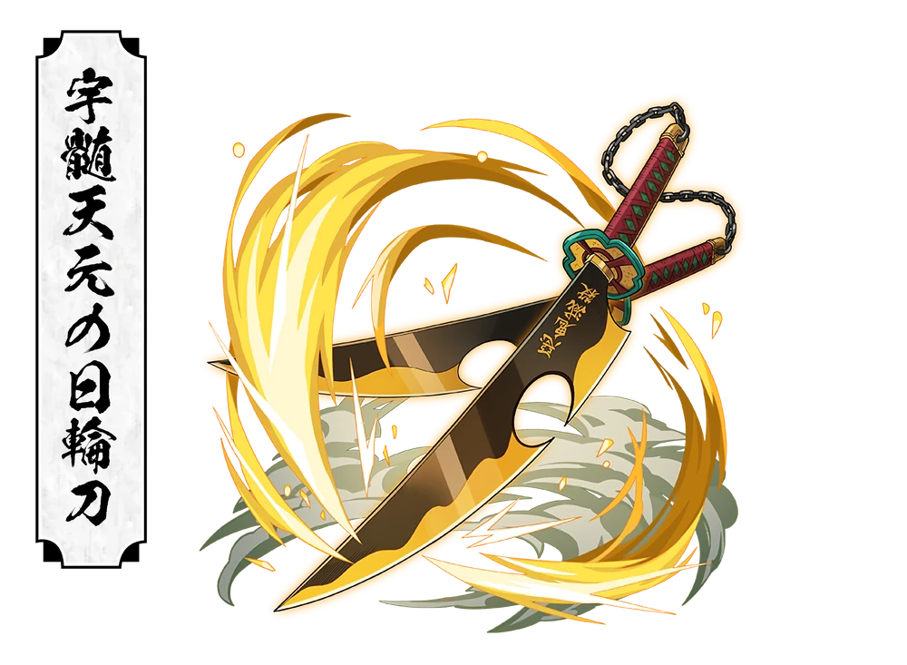

"If you're going to be flashy, then do it extravagantly!"
About
Tengen Uzui is the Sound Hashira of the Demon Slayer Corps and a former shinobi renowned for his flamboyant personality, unmatched speed, and explosive combat style. Raised in a harsh ninja clan where survival came before emotion, he chose a different path one that valued human life and compassion above all else
With his extraordinary hearing, dual Nichirin Cleavers, and unique sound breathing techniques, he became one of the Corps most powerful Hashira. His bravery during the entertainment District battle against Upper Rank Six demonstrated not only his incredible strength but also his willingness to sacrifice everything to protect innocent lives
Basic Information
Full Name : Tengen Uzui
Japanese Name : 宇髄 天元
Alias : Sound Hashira
Gender : Male
Race : Human
Age : 23
Birthday : October 31
Height : 198 cm (6'6")
Weight : 95 kg (209 lbs)
Hair Color : White
Eye Color : Magenta
Occupation : Demon Slayer
Rank : Hashira
Affilation : Demon Slayer Corps
Breathing Style : Sound Breathing
Status : Retired (Alive)
Appearance
He is one of the tallest and most flamboyant Hashira. He has long white hair tied back, striking magenta eyes, and a jeweled headband decorated with large gemstones. His sleeveless demon slayer corps uniform highlights his muscular physique, while golden armbands and accessories reflect his extravagant personality
Personality
He is confident, energetic, and loves anything flashy. He believes that every action should be performed with style and excellence, despite his playful attitude and dramatic behavior, he deeply values his wives, comrades, and innocent people.
Unlike the harsh teachings of his shinobi upbringing, he believes that human lives should always come before missions.
Fighting Style
Tengen uses Sound Breathing, a derivative of Thunder Breathing. His style combines explosive attacks, unmatched speed, and his extraordinary hearing to analyze enemy movements like musical rhythms.
He wields two enormous Nichirin Cleavers connected by a chain, allowing him to unleash devastating attacks while maintaining incredible mobility.
Stone Breathing Forms
First Form : Roar
Fourth Form : Constant Resounding Slashes
Fifth Form : String Performance
Nichirin Weapon

Color : Amber
Type : Dual Nichirin Cleavers
Connection : Long Steel Chain
Speciality : High-speed dual-blade combat and explosive techniques
Abilites
Sound Breathing Master
Master Shinobi Skills
Extraordinary Hearing
Exceptional Speed
Enhanced Strength
Musical Score Technique
Poison Resistance
Dual Blade Mastery
Major Battles
Gyutaro (Upper Rank Six)
Daki (Upper Rank Six)
Entertainment District Arc
Relationships
Makio
One of Tengen's wives and a skilled kunoichi
Suma
One of Tengen's wives, known for her emotional and cheerful personality
Hinatsuru
One of Tengen's wives, admired for her intelligence and calm nature
Tanjiro Kamado
He mentors Tanjiro during the Entertainment District mission and greatly respects his determination
Trivia
Tengen is a former shinobi
He has three wives: Makio, Suma, and Hinatsuru
He retired from the Demon Slayer Corps after the Entertainment District battle
His hearing is so sharp that he can analyze enemy attacks as musical rhythms
He is one of the fastest Hashira
Legacy
Tengen Uzui proved that true strength lies not only in power but also in protecting the people who matter most. His leadership, courage, and unique fighting style played a crucial role in defeating Upper Rank Six, inspiring the next generation of Demon Slayers. Even after retiring, his legacy continues through the warriors he trained and the values he upheld.